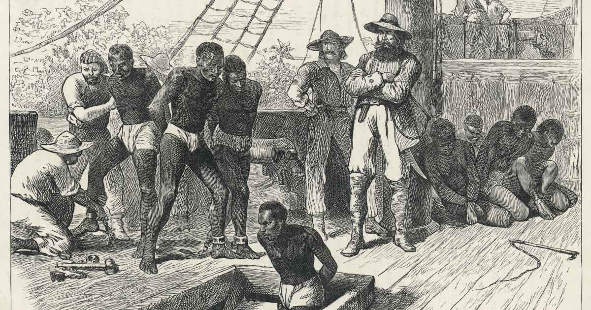

A partire dagli ultimi decenni del Seicento la popolazione europea cominciò ad aumentare, nell'arco di circa un secolo raddoppiò. La crescita demografica però non fu omogenea, ovvero uguale per tutti gli stati, ma variò da stato a stato, in particolare in Inghilterra fu particolarmente alta.
L’Inghilterra all’inizio del Settecento era lo stato più ricco, questo era dovuto anche all’agricoltura. Essa subì numerosi cambiamenti con lo scopo di modernizzarla, si passò da una rotazione triennale a una quadriennale, questo per rendere l'agricoltura più moderna e produttiva, si iniziarono a recintare i campi tramite siepi e muretti e si cercarono incroci di animali per renderli più forti e produttivi. Inoltre gli animali erano molto importanti anche per la produzione di letame, utilizzato come concime.

Tutti i campi erano ormai concentrati nelle mani di grandi proprietari, i nobili.A differenza degli altri stati europei i nobili inglesi non pensavano che non dovessero lavorare, proprio su questo principio nascono gli imprenditori.Essi investono una parte degli ingenti capitali che avevano accumulato nel tempo, per lo sviluppo del paese. Finanziarono opere per la costruzione di strade, canali navigabili (nei quali avrebbero potuto chiedere un pedaggio) e crearono manifatture artigianali che, nel tempo, si trasformarono in industrie.

Nel Settecento l’Inghilterra aveva conquistato anche il dominio sugli oceani, vincendo su tutte le altre nazioni. Inoltre, aveva anche il monopolio sulla tratta degli schiavi con le colonie spagnole. Poteva contare su una flotta superiore a tutte le altre e su rifornimenti rapidi provenienti dalle colonie ed economici in quanto i prezzi li definiva madre patria.Con l’aumento della popolazione però iniziò a crescere anche la domanda dei beni di consumo.
Per tutto il medioevo la trasformazione delle materie prime in prodotti finiti era stata opera degli artigiani. In Inghilterra si era sviluppato il lavoro a domicilio, i mercanti distribuivano le materie prime agli artigiani, essi le lavoravano e una volta terminato il lavoro i mercanti tornavano a prendere i prodotti finiti. Nella lavorazione contribuivano tutti pure i vecchi e i bambini, la ricompensa non era alta ma si accontentavano. Ma con l’aumentare delle richieste dei beni questa tipologia di lavoro non bastava più, serviva produrre più roba in minor tempo.
Proprio questa necessità stimolò lo sviluppo di piccole e grandi invenzioni. Il settore tessile fu completamente rivoluzionato grazie a molti miglioramenti, uno tra questi comprende la navetta volante, inventata nel 1733, permetteva di spostare il filo da un bordo all’altro del telaio, aumentandone il rendimento. Furono migliorati anche i filatoi, diventando più efficienti e veloci. Tutte queste invenzioni portarono a diminuire il personale necessario per il funzionamento di tutte le macchine; infatti, un solo operaio poteva controllare fino a 4 telai.

Per azionare i nuovi macchinari servivano nuove forme di energia. Inizialmente si ricorse all’energia idraulica ma essa non era del tutto comoda in quanto le fabbriche dovevano obbligatoriamente sorgere vicino ai corsi d’acqua, inoltre poteva congelarsi in inverno o prosciugarsi in estate. Si passò così al vapore, grazie al carbone si faceva bollire l’acqua in una caldaia e produrre del vapore in pressione, il quale opportunamente regolato e diretto azionava i macchinari. Tuttavia la prima macchina a vapore era troppo dispendiosa, richiedeva troppo utilizzo di carbone così James Watt la migliorò rendendola più efficiente ed economica.
Macchine, carbone e vapore permisero uno straordinario sviluppo dell'industria, che prese il nome di rivoluzione industriale, essa cambiò in modo irreversibile il modo di lavorare. Per questo è anche considerata la più grande rivoluzione economica. Essa ebbe inizio in Inghilterra verso la fine del settecento e lentamente arrivò a svilupparsi nell’Europa continentale, in particolare in Francia e Germania per poi diffondersi in tutto il mondo.